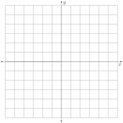

Handout Daily Prep 1.6 - The Second Derivative
Section Overview
We have spent a lot of time so far focusing on the derivative of a function, which we will in the future also call the “first derivative”: its definition, its meaning, and various interpretations in applied contexts. The first derivative, in essence, tells us whether a given function is increasing or decreasing at a certain point. Next, we are interested in learning how a function is increasing or decreasing at a given point, and the key tool to doing so is the second derivative of the function: Here, we consider what happens when we consider the derivative of the derivative of a function.
Section Basic learning objectives
These are the tasks you should be able to perform with reasonable fluency when you arrive at our next class meeting. Important new vocabulary words are indicated in italics.
-
Understand the formal definition of the terms increasing and decreasing and their connection to the first derivative of a function.
-
Determine whether a function is increasing or decreasing given information about the sign of \(f'\) (the first derivative).
-
Identify what we can learn by taking the derivative of the derivative of a function.
-
Define what is meant by the second derivative of a function.
-
Define what it means for a function to be concave up or concave down on an interval, and graphically identify intervals on which a function is concave up or concave down, given a graph of the function.
-
Determine whether a function is concave up, concave down, or linear given information about the sign of \(f''\) (the second derivative).
Section To prepare for class
Complete all actions listed below. Respond to the questions highlighted with Submit.
-
Read motivating questions and the introduction to section 1.6 (up until the preview activity).
-
-
(Optional) Watch video solution to Preview Activity 1.6.1(a) (3:16).
-
(Optional) Watch video solution to Preview Activity 1.6.1(b) (3:50).
-
(Optional) Watch video solution to Preview Activity 1.6.1(c)-(e) (4:16).
-
-
Watch the following video: Quick Review: The Second Derivative (3:06).
-
[Submit] Read Definition 1.6.2. Then, compare how the GeoGebra applet (Increasing/Decreasing Function Visual) attempts to illustrate this definition. Respond to these questions:
-
What do the colored arrows show?
-
How is that related to the definition? Experiment with different functions as needed.
-
-
[Submit] Explore the relationship between \(f'\) and where a function is increasing and decreasing via this fun GeoGebra applet with a cute turtle: Increasing and Decreasing Functions. Summarize the point of the applet by filling in the blanks in this sentence: A function \(f\) is increasing when \(f'\) is \(\underline{\hspace{20mm}}\) and is decreasing when \(f'\) is \(\underline{\hspace{20mm}}\text{.}\)
-
[Submit] Explore, even more, the relationship between \(f'\) and where a function is increasing and decreasing via this (less fun) GeoGebra applet: Increasing/Decreasing Function. Check that your responses to the blanks in the previous bullet are correct for this example.
-
Give four \(x\)-values for which the function is neither increasing nor decreasing?
-
-
Watch this (rather boring, but useful) video on algebraically computing a second derivative using a limit: Limit Definition of the Second Derivative (9:48).
-
Read section 1.6.4 on concavity.
-
Watch this video on determining concavity from a graph: Determining Concavity from a Graph (7:42).
Section After class
Solidifying the concepts discussed in class through practice is necessary to build your skills.
-
Ask Copilot “What is concavity, in a nutshell?”
-
Ask Copilot “Which graph is \(f\text{,}\) which is \(f'\text{,}\) and which is \(f''\) for the uploaded graph.” Be sure to also upload the graph of something such as that found here. Does Copilot produce a correct response?
-
Do a computation in which you find \(f''(x)\) for \(f(x) = 5x^{2}\) two ways. First, you already watched a video on algebraically computing a second derivative using a limit: Limit Definition of the Second Derivative (9:48). Similar to this video, compute \(f''(x)\text{.}\) There is, however, a single limit that can be computed to determine \(f''\text{.}\) For any point \(a\text{,}\) it turns out that\begin{equation*} f''(a) = \lim_{h \rightarrow 0}\frac{f(a+2h)-2f(a+h)+f(a)}{h^{2}}. \end{equation*}Use this formula to compute \(f''(x)\) when \(f(x) = 5x^{2}\) and compare to the answer you found using the method from the video.
-
Practice Identifying the graph of \(f\text{,}\) \(f'\) and \(f''\) for various examples using this applet: Identify the Function, First, and Second Derivatives. You will be asked a question like this on at least one future exam.
Section Advanced learning objectives
In addition to mastering the basic objectives, here are the tasks you should be able to perform after class, with practice:
-
Compute the second derivative of a function, using the limit definition.
-
Given a function \(y=f(x)\) and the units of measure of both \(x\) and \(y\text{,}\) determine the units of \(f''(x)\text{.}\)
-
Explain what the six different combinations of increasing/decreasing and concave up/concave down/linear mean in real-life terms (such as “increasing at a decreasing rate”).
Section Additional suggestions
-
Do these exercises.
-
![Graph showing three functions plotted on the same coordinate grid. The horizontal axis is labeled x and the vertical axis is labeled y, with integer tick marks shown. One graph is a solid blue curve. It oscillates smoothly across the interval, reaching a high point above y = 6 near x = −4, then decreasing to cross the x-axis near x = −1. The curve continues downward to a deep minimum below y = −5 near x = 4, before increasing again toward the right. A second graph is a black dashed curve. It oscillates with smaller amplitude than the blue curve, crossing the x-axis several times. It has local maxima near x = −4 and x = 4 and a local minimum near x = 1. A third graph is a red dotted curve. This curve also oscillates and appears phase-shifted relative to the black dashed curve. It has a local minimum near x = −4, a local maximum near x = −2, another minimum near x = 1, and a local maximum near x = 3. All three functions are continuous over the displayed interval and intersect or approach one another at several x-values. The figure emphasizes comparison of amplitude, phase shift, and oscillatory behavior among the three functions."](generated/latex-image/WhichIsWhichPic.svg)
Figure 35. Identify which graph is \(f(x)\text{,}\) which graph is \(f'(x)\text{,}\) and which graph is \(f''(x)\text{.}\) -
Identify each curve.
-
Determine the intervals (approximately) over which \(g(x)\) is increasing.
-
Determine the intervals (approximately) over which \(g(x)\) is concave up.
-
-
Sketch the graph of a function \(f(x)\) that satisfies all of the following conditions:
-
\(\displaystyle f'(0)=f'(2)=f'(4)=0\)
Figure 36. An empty grid. -
-
Section Answers
-
-
\(g\) is shown in blue (solid), \(g'\) is shown in black (dashed), and \(g''\) is shown in red (dotted).
-
-
![Graph of a function on a coordinate grid with the horizontal axis labeled x and the vertical axis labeled y, both marked with integer tick marks. The graph is a single smooth curve. On the left, near x = −5, the curve is below the x-axis and increasing. As x increases, the graph continues upward and reaches a local maximum slightly above y = 2 near x = 0. The curve then decreases to a local minimum just below the x-axis near x = 2. After this minimum, the curve increases again to a second local maximum near x = 4 at a y-value around 2, then decreases sharply toward the right edge of the graph, falling below the x-axis near x = 5. The graph has no open circles, corners, or breaks, indicating the function is continuous and smooth over the displayed interval."](generated/latex-image/MeetConditionsPic.svg)
Figure 37. This graph of \(f(x)\) meets several conditions defined by the derivative of \(f(x)\text{.}\)